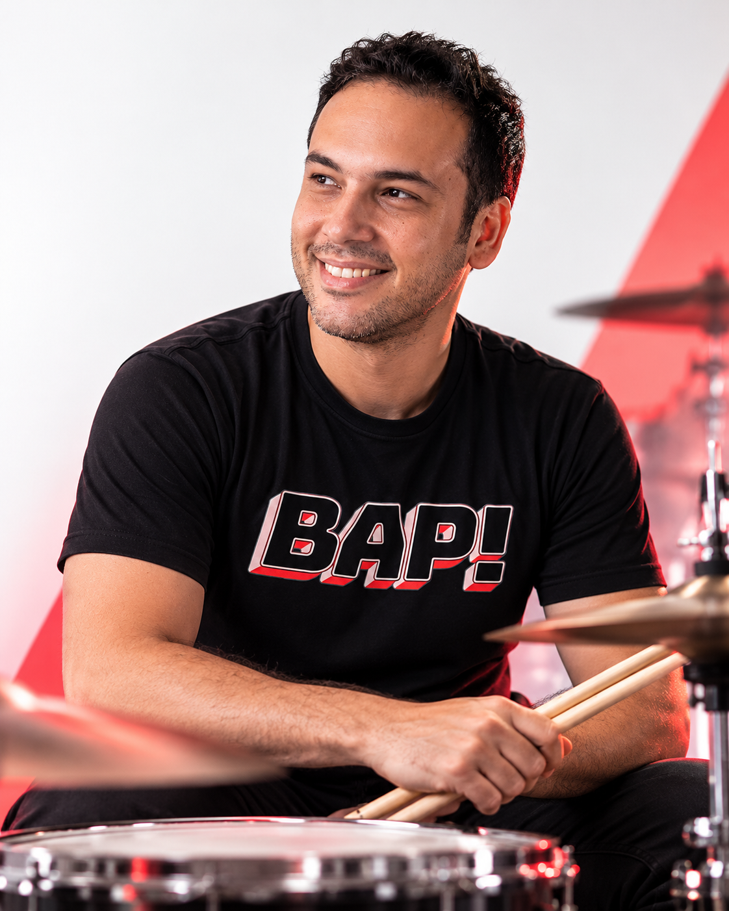

01 / MÉTODO
Conheça o seu caminho.
Entenda a proposta do BAP e sua relação com a prática musical e o corpo.
EXPLORAR O MÉTODO MÚSICA · MOVIMENTO
MÚSICA · MOVIMENTOFALE COM O MÉTODO BAP
Dúvidas sobre o método, o curso ou como levar o BAP para sua escola? Vamos encontrar o melhor caminho para você.
CONVERSE COM TIAGOPelo Instagram · @tiagoguimaraesfisio

MÚSICA E CONSCIÊNCIA CORPORALEncontre o assunto que faz sentido para você.
Entenda a proposta do BAP e sua relação com a prática musical e o corpo.
EXPLORAR O MÉTODOVeja os conteúdos e a proposta de aprendizagem antes de começar.
CONHECER O CURSOConverse sobre formação de professores e projetos de educação corporal.
CONVERSAR SOBRE PROJETOSO diagnóstico educativo ajuda a descobrir o seu caminho no BAP.